Čajové soupravy
Soupravy pro pomalé stolování, čajové rituály a dárkové příležitosti.
Ručně vyráběná keramika z Prahy
V KERATu vyrábíme dekorativní i užitkovou keramiku s vysokým podílem ruční práce. Nabízíme široký sortiment pro domov, dárky, restaurace i zakázkovou výrobu.
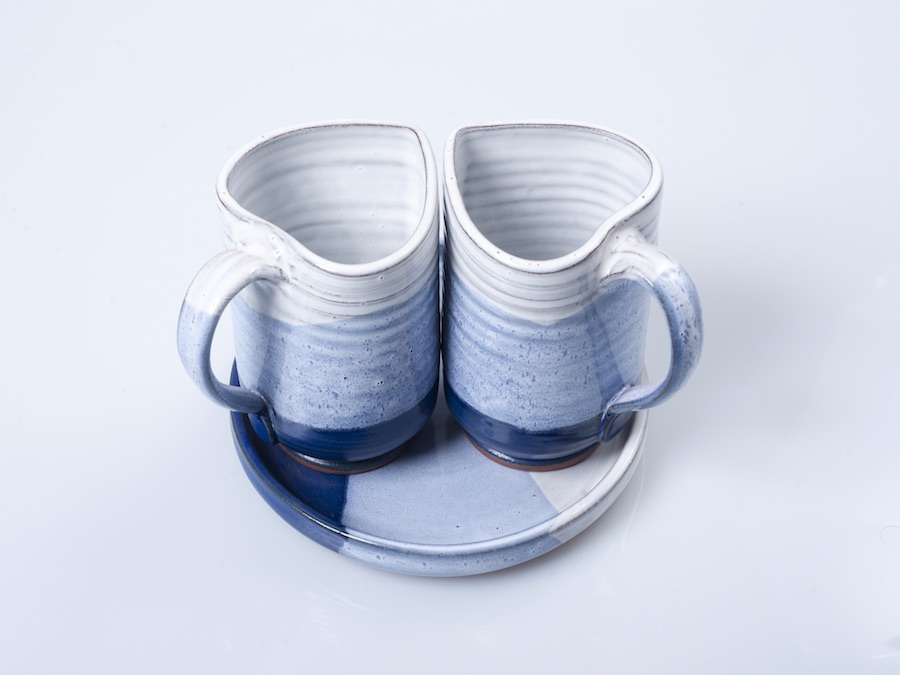
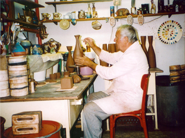
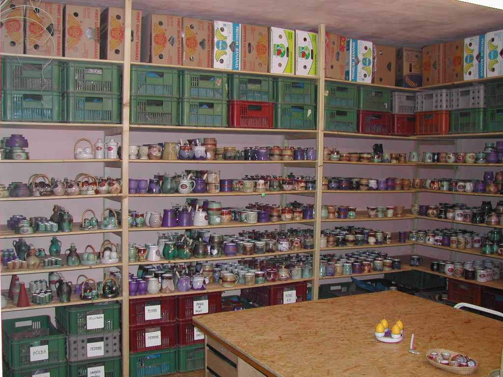
Vybraný sortiment
Původní fotokatalog jsme přeuspořádali do přehledných kategorií, aby zákazník rychle našel to, co hledá.
Soupravy pro pomalé stolování, čajové rituály a dárkové příležitosti.

Ručně tvarované hrnky, oblíbené dárkové kusy i každodenní keramika.

Keramika pro atmosféru interiéru, světlo, vůni a dekorativní akcent.

Vtipná keramika, dárkové předměty a drobnosti s osobitým charakterem.

Tradiční i nápadité tvary, které si zákazníci z původního katalogu dobře pamatují.

Servírování, stolní doplňky a užitková keramika pro každodenní provoz.

Pekáčky, dózy, kořenky a další funkční kusy do domácnosti i na chalupu.

Bytové doplňky, vázy, zvonky a další dekorativní keramika s glazovaným povrchem.

Odolné kusy pro gastro provoz, servírování a originální atmosféru podniku.

Sady pro kompletní stolování ve sjednocených glazurách a tvarech.
Barevnost, která prodává
Celý sortiment vyrábíme ve 40 barevných možnostech. Skladem držíme 12 nejžádanějších designů: 1, 2, 3, 4, 14, 17, 30, 35, 36, 37, 38 a 39.
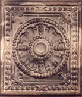
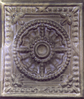
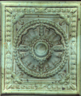
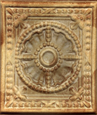
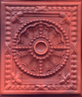
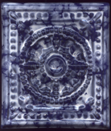
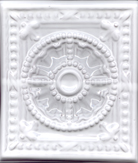
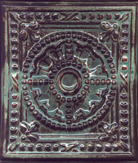
Rodinná dílna a osobní přístup
Zkušenosti předávané generacemi, vlastní receptury glazur a vzorkovna v Praze 6. Zákazník u nás nenakupuje anonymně, ale přímo od lidí, kteří keramiku vyrábějí.
Zkušenosti sahají až do konce 18. století. Důraz zůstává na ruční práci, vlastních glazurách a keramice, která má sloužit i zdobit.
Od roku 1993 probíhá spolupráce s odborným učilištěm. Dílnou prošly celé generace učňů a řemeslo tak žije dál.
Vzorkovna a atelier v Praze 6 umožňují osobní konzultaci, výběr glazur i přímé představení sortimentu.
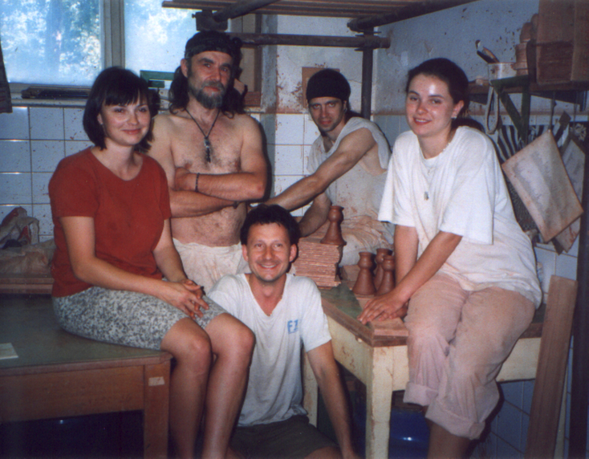
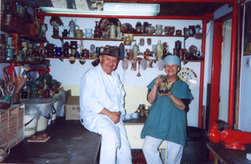
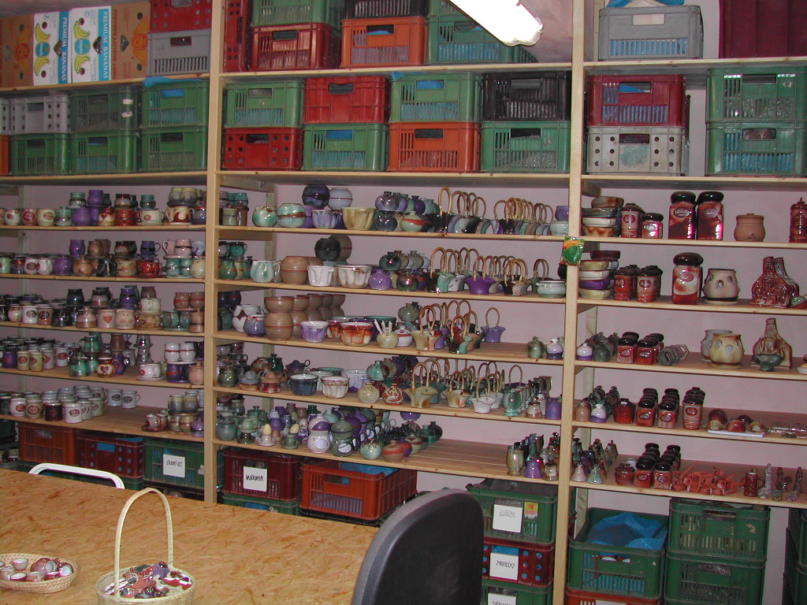
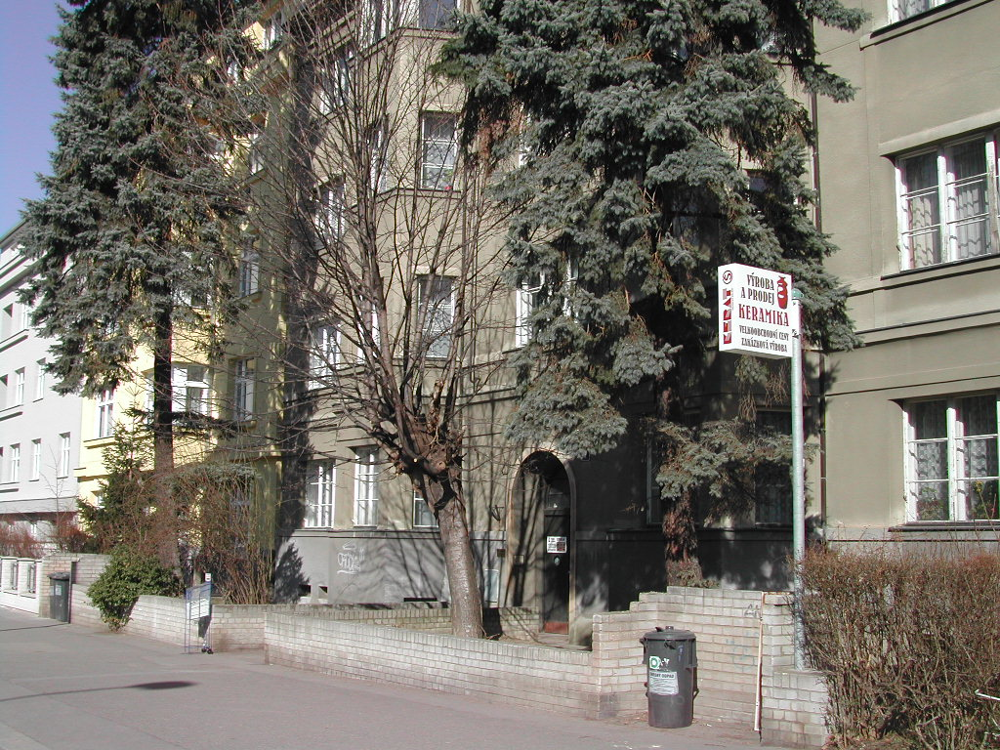
Proč nakupovat u KERAT
Dvakrát pálená, vysoce slinutá keramika vypalovaná na 1140 až 1160 °C.
Od čajových souprav a hrnků přes dekorace až po firemní a zakázkové kusy.
Jednotlivé objednávky posíláme poštou nebo Zásilkovnou, větší objednávky řešíme individuálně.
Máte otázky?
Keramiku objednáte přes náš online obchod na Fler.cz nebo nás kontaktujte přímo e-mailem na stepanek@kerat.cz. Větší a zakázkové objednávky řešíme individuálně.
Ano, zakázkovou výrobu nabízíme. Realizujeme firemní loga, reklamní keramiku i individuální motivy. Kontaktujte nás pro nacenění a podrobnosti.
Skladem držíme 12 nejpoptávanějších designů: glazury č. 1, 2, 3, 4, 14, 17, 30, 35, 36, 37, 38 a 39. Ostatních 28 glazur vyrábíme na objednávku.
Vzorkovna a atelier v Praze 6 Dejvicích jsou otevřeny pondělí až pátek 8:00–17:00. Večerní a víkendní návštěvy domluvte předem telefonicky nebo e-mailem.
Hledáte unikátní keramiku nebo zakázku na míru?
Do online obchoduKontakt
Chcete vybrat konkrétní keramiku, domluvit zakázku nebo přejít rovnou do obchodu? Ozvěte se přímo do atelieru nebo pokračujte do online nabídky.
KERAT Keramika
Petr Štěpánek
Stavitelská 6 / 1099
Praha 6 Dejvice, 160 00
Pondělí až pátek 8:00-17:00, večer a víkend po dohodě.
Praha 6 Dejvice